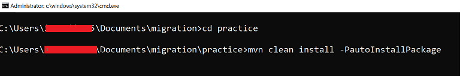
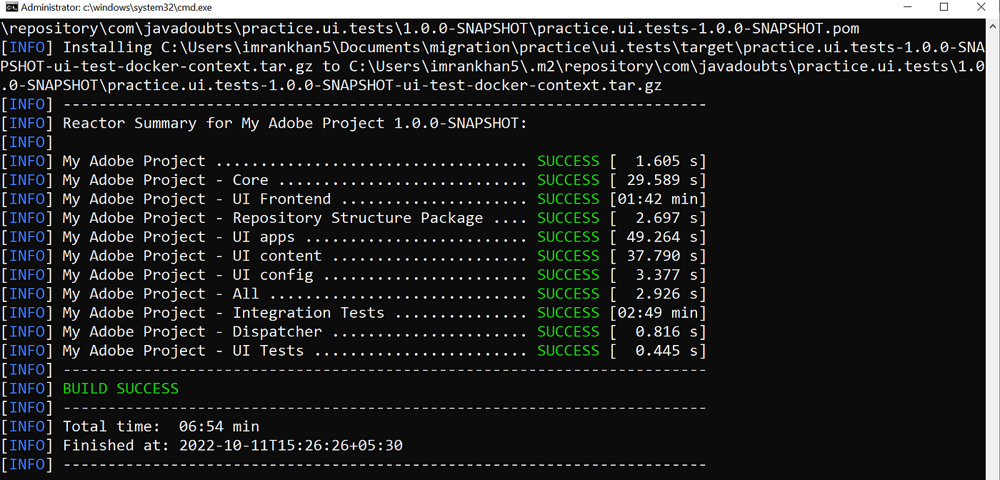
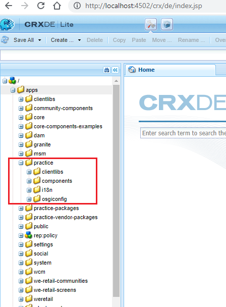

CHAPTER 7 : Verify Code Deployment
In a previous blog post, we created an AEM project using the AEM Maven archetype. For more information, please refer to this link.
Deploying AEM Code
Before deploying the code, we need to set up a new AEM instance. Instructions for installing and configuring AEM can be found here. Now, it's time to deploy the AEM project on the AEM instance using the following commands:AEM Installation Steps :
-
Step 1 : AEM Installation
-
Command 1 :
This command cleans all the modules and deletes target folders.
mvn clean install -
Command 2 :
This command deploys the code to the AEM author instance.
The autoInstallPackage and other profiles are generated at the time of project creation in the main pom.xml. It creates a zip file of HTML, CSS, .jar, and other resources, installing the same in the AEM author instance.
mvn clean install -PautoInstallPackage -
Command 3 :
This command deploys the code to the AEM publish instance.
Similarly, the autoInstallPackagePublish profile is generated at the time of project creation in the main pom.xml.
It also creates a zip file of HTML, CSS, .jar, and other resources, installing them in the AEM publish instance.
mvn clean install -PautoInstallPackagePublish -
Command 4 :
This command deploys only the Java code as a JAR file in the form of a bundle.
mvn clean install -PautoInstallBundle
-
Command 1 :
-
Step 2 : Code Deployment
Navigate to the project's root practice folder and use the following command to deploy the code as part of the current deployment.
It creates a zip file of HTML, CSS, .jar, and other resources, installing them in the AEM author instance.
mvn clean install -PautoInstallPackage Success messages for all modules.
 -
Step 3 :
Access the URL and confirm the installation of the following essential packages after a successful build:
- practice.ui.content-1.0.0-SNAPSHOT.zip
- practice.ui.apps-1.0.0-SNAPSHOT.zip
- practice.ui.config-1.0.0-SNAPSHOT.zip
- practice.all-1.0.0-SNAPSHOT.zip
Visit the URL and ensure that the highlighted code structure is present within the /apps/practice folder. 
To ensure a successful build, it is imperative to verify the installed bundle or JAR file immediately after the build. Its status must be active.
Visit